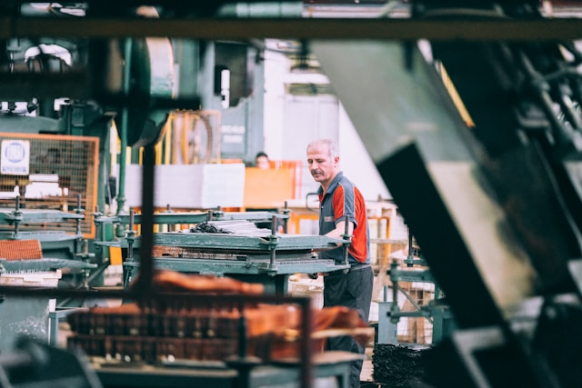
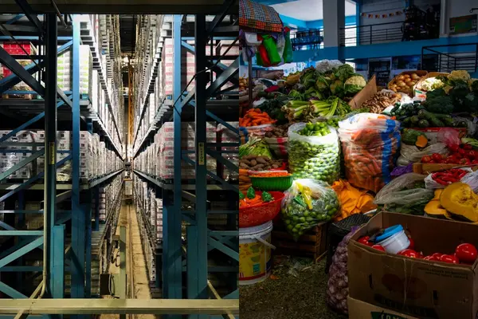
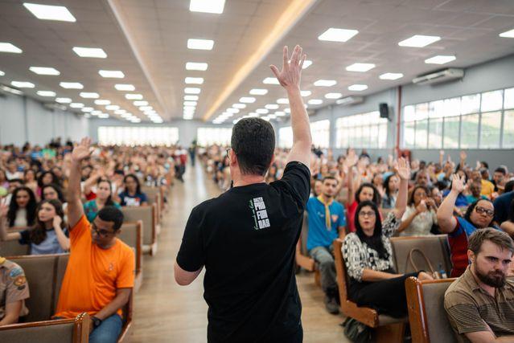
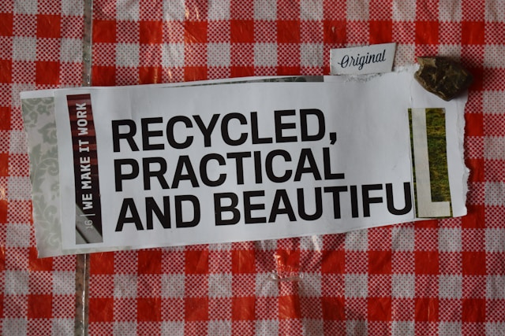

Supporting Microfinance and Community-Led Credit
Small-scale industrial setups, neighborhood workshops, and independent creators form the economic bedrock of developing regions, yet they routinely encounter a steep, systemic barrier: an absolute lack of accessible capital. Traditional banking institutions operate on rigid, risk-averse frameworks that require substantial tangible collateral, such as formal property deeds, commercial vehicles, or land titles. For a grassroots entrepreneur or an artisan running an unregistered home workshop, these demands are impossible to meet. Consequently, commercial banking systems structurally exclude the very enterprises capable of driving localized industrial innovation, forcing them to remain stagnant or turn to predatory, high-interest informal lenders.

To break this cycle, communities must actively champion and transition toward alternative, community-driven microfinance initiatives and trust-based credit systems. Microfinance institutions specialize in delivering targeted micro-loans that bypass conventional banking hurdles by utilizing group-guaranteed lending models or character-based vetting. As individuals, students, and neighbors, our role is to act as informational bridges—connecting local vendors to reputable micro-credit organizations and helping them form localized cooperative saving circles. These grassroots credit associations allow members to pool small amounts of capital collectively, providing interest-free, rotating loans that allow a business owner to purchase critical raw materials or basic machinery without entering a cycle of debt.
| Traditional Banking Obstacles | Grassroots & Microfinance Solutions |
|---|---|
| High collateral requirements (property/land deeds) | Trust-based or group-guaranteed lending models |
| Rigid, lengthy paperwork and credit score checks | Simplified documentation tailored to informal businesses |
| High minimum loan amounts unsuitable for small setups | Micro-loans ideal for purchasing raw materials or basic tools |
Accelerating Digital Financial Literacy
In an increasingly cashless global economy, operating entirely within a physical cash-based ecosystem is a severe competitive disadvantage. Cash-only micro-enterprises face invisible barriers: they alienate younger, tech-dependent demographics, struggle with the logistical risks of handling and storing physical currency, and find it incredibly difficult to maintain the transparent financial records required to prove creditworthiness. Integrating simple, low-cost financial technologies—such as unified QR codes or mobile merchant wallets—instantly links a street vendor, local market stall, or small-scale manufacturer into a country's broader digital economic infrastructure.
Despite the availability of free digital payment tools, a profound digital literacy gap prevents thousands of traditional business owners from making the leap. Concerns over digital fraud, hidden transaction fees, and general technical unfamiliarity build a wall of resistance. This is where university students and tech-literate citizens can step in with practical, direct mentorship. By spending an afternoon volunteering to walk a local shopkeeper through a secure setup process, showing them how to instantly verify incoming SMS transaction alerts, and explaining standard digital security hygiene (like keeping PINs private), you can permanently transform how an independent business interacts with the modern marketplace.
Volunteer Action Principle:
Digital financial inclusion is not just about installing an app; it is about building trust. When helping a local merchant adopt QR code payments, our primary role as students is to ensure they understand security practices, transaction verification, and cash-flow tracking to prevent exploitation.
When purchasing daily essentials or services, what is your primary reason for choosing a large corporate outlet over a local independent vendor?
Integrating Small Vendors into Value Chains
Modern supply chains are heavily dominated by massive corporate conglomerates and centralized hypermarkets. Because large industries prioritize volume discounts and automated logistics, they consistently source their raw materials, logistics, and catering from other massive corporations. This corporate isolation systematically pushes small-scale local producers, family farms, and independent craftsmen out of the primary economic value chains. When local institutions, universities, and commercial spaces buy exclusively from multinational brands, wealth is drained directly out of the immediate community.

Redirecting this economic flow requires a collective commitment to "conscious consumerism" from ordinary citizens and local organizations alike. We can actively reshape supply chains by evaluating our daily buying habits and choosing to source products directly from the ground up. When we buy goods directly from independent makers, we are intentionally keeping them integrated into the economic ecosystem.
Bridging the Gap to Digital Marketplaces
A narrow, isolated geographical footprint is one of the most critical vulnerabilities for any traditional small enterprise. When a small business relies completely on physical foot traffic on a specific street corner, it remains highly exposed to local disruptions, seasonal drops, or unexpected urban infrastructure changes. If the immediate neighborhood experiences lower foot traffic, the business immediately suffers. Transitioning these businesses onto established e-commerce platforms and social commerce marketplaces completely changes this dynamic by instantly expanding a hyper-local business's reach to a massive national audience.
While the potential of e-commerce is undeniable, the practical steps required to get started—such as staging clean product photography, managing online inventory, configuring weight-based courier shipping, and linking merchant bank accounts—can feel incredibly overwhelming to a traditional business owner. Tech-literate students can act as a crucial technical bridge to facilitate this onboarding process. By guiding an entrepreneurial family or local merchant through the digital storefront creation process, you provide them with a resilient, secondary revenue stream that operates 24/7.
Empowering Local Enterprises Through Advocacy
Direct community actions, such as teaching digital financial literacy or modifying our individual purchasing habits, provide essential, immediate support to small businesses. However, building long-term, structural resilience requires systemic change. Grassroots enterprises cannot thrive if municipal zoning laws, tax structures, and public infrastructure spending exclusively favor multinational developers and massive industrial parks while completely ignoring the needs of smaller informal markets. Everyday citizens and student communities hold the collective power to advocate for policies that give small enterprises a fair and equal chance to compete.

Advocacy means turning individual efforts into a loud, organized community voice. By focusing on the essential role small-scale industries play in preserving cultural heritage and creating local jobs, citizens can push local councils and public institutions to invest in equitable infrastructure. This includes creating dedicated, low-cost marketplace zones, public cooling storage for small farmers, and fair public procurement policies.
Adopting Sustainable Practices for Operational Resilience
To achieve true resilience under SDG 9, integration into markets must go hand in hand with environmental sustainability. Small-scale industries often operate with constrained resources, making them particularly vulnerable to fluctuating energy prices, raw material scarcity, and environmental degradation. When a small business relies on inefficient manufacturing techniques, single-use plastic packaging, or high-emission energy sources, it drives up long-term operational overhead while accelerating its ecological footprint. Developing resilient infrastructure requires a bottom-up commitment to greening small-scale operational frameworks.

Transitioning toward eco-friendly practices does not require massive corporate capital; it begins with realistic, incremental optimizations at the local workshop level. Communities and students can support merchants by collaborating on zero-waste packaging alternatives, designing circular production models where waste products are repurposed, and adopting energy-saving habits. These operational changes not only insulate small businesses against resource supply spikes but also position them favorably in modern eco-conscious markets.